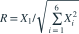
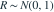

独立同分布为N(0,1)，令
独立同分布为N(0,1)，令 
。以下说法正确的是？- A

- B 几乎处处成立，因此R不可能服从任何t分布
- C
- D
我已思考，展开答案与解析
正确答案：B
- 分母至少为 ，故比值被限制在[-1,1]内。
- t分布和标准正态分布支撑为整个实轴，不能满足这个有界条件。
- 分母含有分子，不能使用独立正态与卡方比的定理。
易错提醒先看支撑集，常能立即排除错误分布。
考后回忆 · 条件重建 · 回忆8、9
依据考试回忆重建；数字、选项和必要条件为补充设定，非原题。